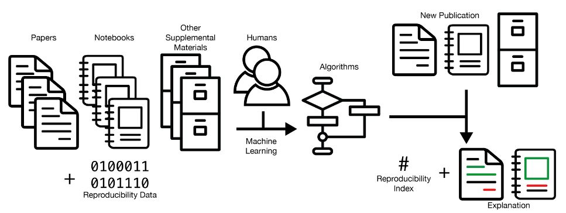
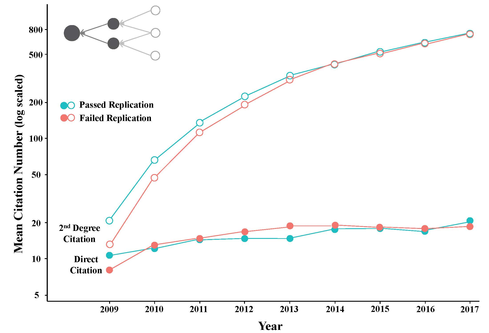

Identifying Reproducible Research Using Human-in-the-loop Machine Learning

Research quality thrives under healthy skepticism where scientists retest hypotheses creating higher levels of confidence in the original findings and a sturdy foundation for extending work. Recent attempts to sample scientific research in psychology, economics, and medicine however have shown that more scientific papers fail than pass manual replication tests. Consequently, several attempts have been made to find ways to efficiently extend replication studies, including new statistics, surveys, and prediction markets. However new statistics have been very slowly adopted and the high costs associated with surveys and prediction markets makes these methods impractical for estimating the reproducibility of more than a few hundred studies out of the vast stock of millions of research papers that are used as building blocks for current and future work. The research aims to develop metrics and tools to help make replication studies of existing work more efficient with one additional benefit: to help scientists, scholars, and technologists self-evaluate their work before publishing it.
This project combines efforts to create new datasets, ‘reproducibility’ metrics, and machine learning models that estimate a confidence level in the reproducibility of a published work. The deliverables will include new datasets covering the success and failure of hundreds of scientific papers in psychology and economics and their related subfields. The metrics will go beyond a binary classification of whether a publication is estimated to be reproducible or not. They will quantify a level of confidence that the work is likely to be reproducible. The machine learning models will also help scientists interpret and explain confidence scores, which aid scientists in learning about the factors that correlate with reproducibility. In all three areas, the project will aim to provide scientists with better tools to evaluate the reproducibility of their own and others’ work, creating a better foundation of knowledge for advancing research.

Team
- Hamed Alhoori (PI)
- David Koop (Co/PI)
- Brian Uzzi (PI, Northwestern University)
- Akhil Pandey PhD student
- Mohammed Murtuza Shahzad Syed PhD student
- A S M Shahadat Hossain PhD student
- Omer Bin Ali Bajubair MS student
Collaborators
Publications
-
Koop, D. (2020). Notebook Archaeology: Inferring Provenance from Computational Notebooks. In Provenance and Annotation of Data and Processes (pp. 109-126). Springer, Cham.
-
Akella, A. P., Alhoori, H., Kondamudi, P. R., Freeman, C., & Zhou, H. (2021). Early indicators of scientific impact: Predicting citations with altmetrics. Journal of Informetrics, 15(2), 101128.
Media Coverage
- Spell check for research? Confronting the reproducibility crisis with explainable AI NIU Newsroom, Jan 2021
Sponsor
This material is based upon work supported by the National Science Foundation under Grant No. 2022443. Any opinions, findings, and conclusions or recommendations expressed in this material are those of the author(s) and do not necessarily reflect the views of the National Science Foundation.
Hamed Alhoori
My research interests include Data Science, Applied Machine Learning, Text Mining, Science of Science, Computational Social Science, Social Computing